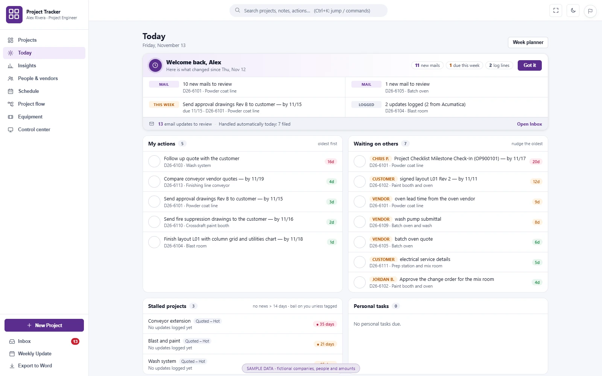
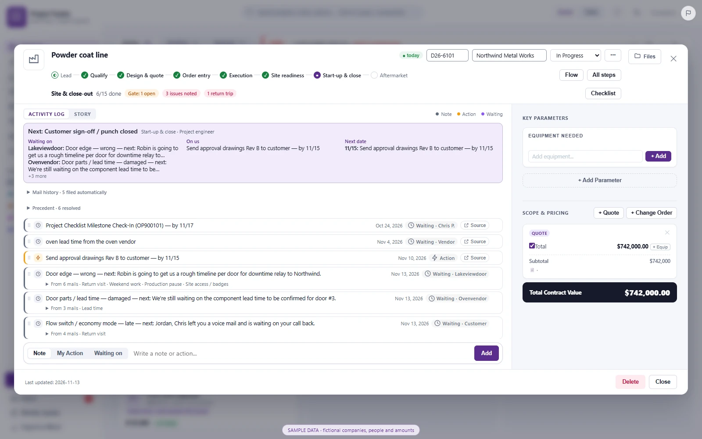
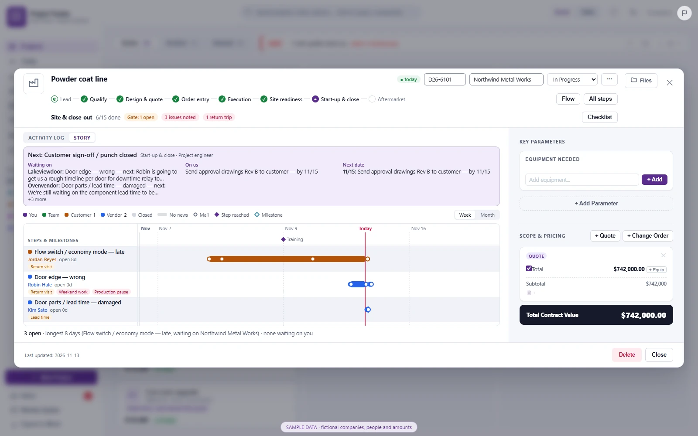
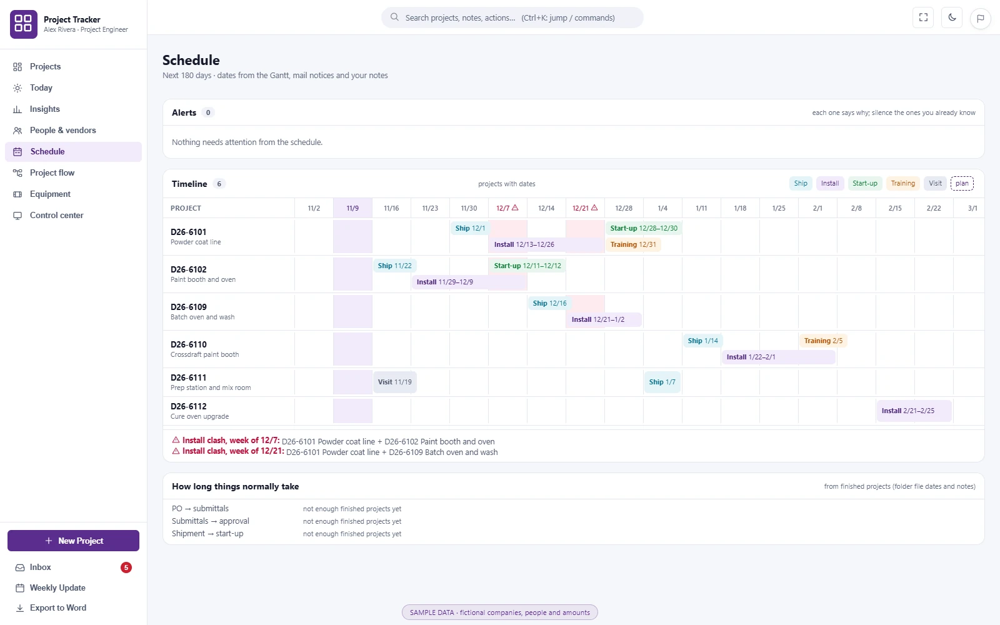
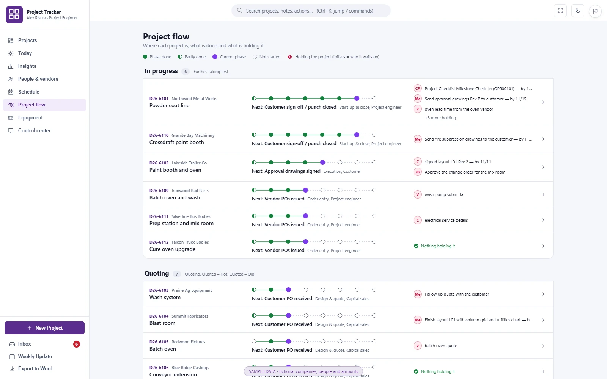
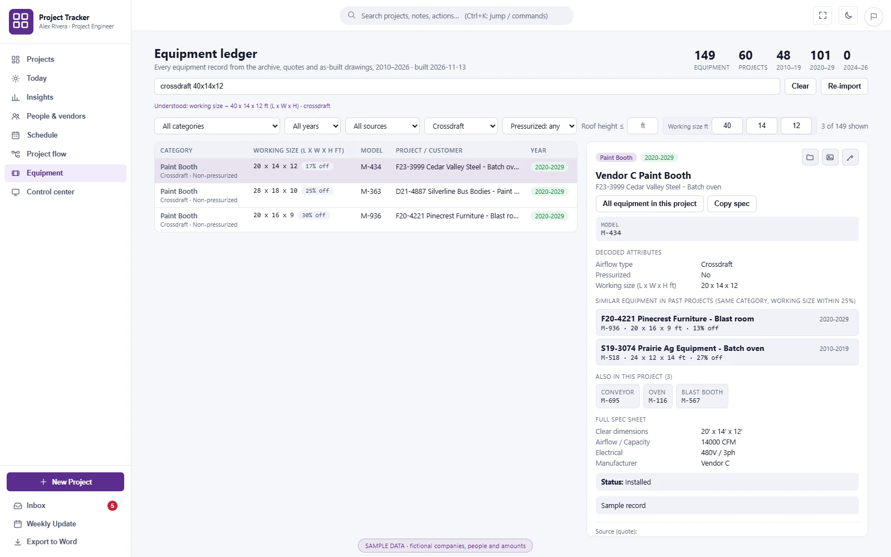
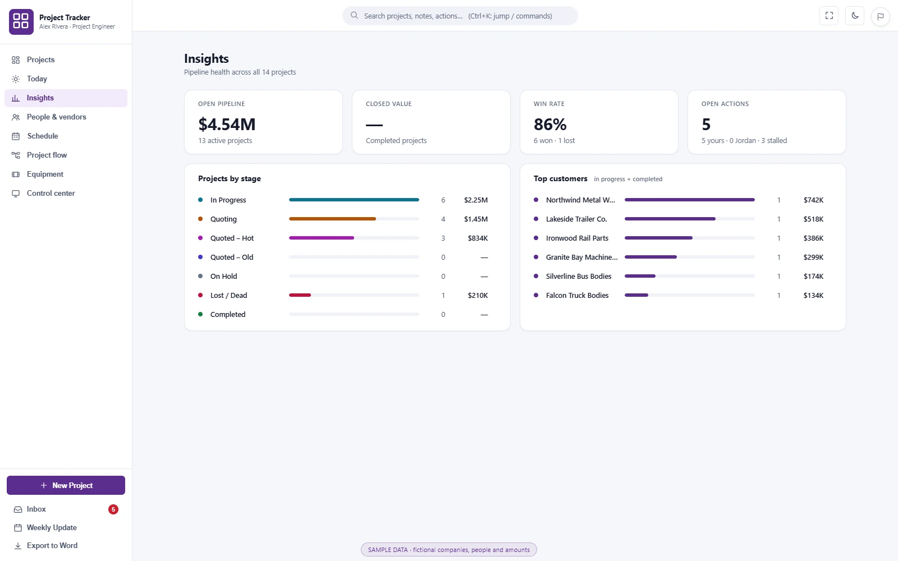
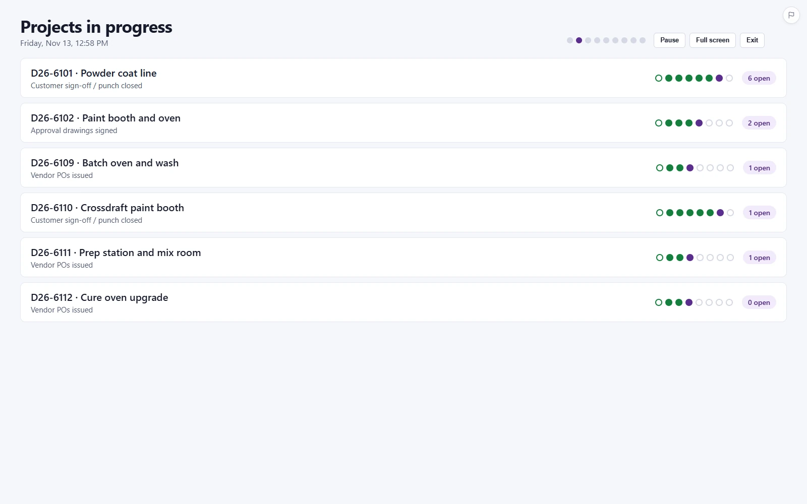
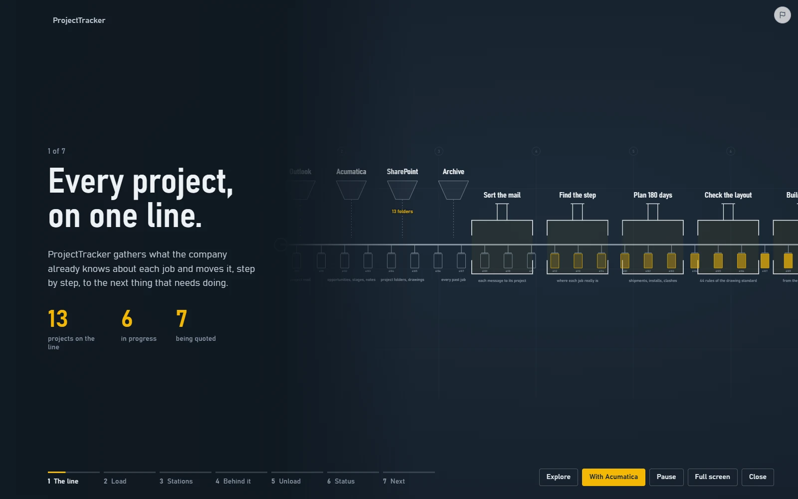

ProjectTracker
The visual command center I run my projects from every day. A board for every job, a digest of what changed, a timeline of each problem, a 180-day schedule and a flow map of what is holding each project — with the email, milestone and drawing automation built in. I built it for my own job as a project engineer.
Problem
Running ~20–25 live projects meant information spread across Outlook, the ERP and SharePoint: hours each week matching ~145 emails to jobs, updating the ERP by hand and catching drawing errors late.
What I did
A desktop command center — board, Today digest, Story timelines, 180-day schedule, flow maps, equipment ledger — fed by rules-first automation that files email, detects milestones and checks drawings. I approve every ERP write; the LLM only writes one-line summaries.
Result
~7.3 h saved per week (~340 h/year), 94% agreement with my past manual decisions, and real drawing errors caught before release.
01Tour
These are the screens I work in all day. Every screenshot and loop below is the real app running on fictional sample data — invented companies, people, job numbers and amounts. Click a screenshot to see it full size.









02Context
As a project engineer I lead the engineering on 54 opportunities (USD 21M quoted). The information for each one is spread across Outlook threads, the Acumatica ERP and SharePoint folders full of layouts, vendor drawings and quotes. Keeping the ERP current and catching mismatches between documents was manual, slow and easy to get wrong.
Constraints I designed around: mail and ERP are read-only unless I approve a change, nothing may be written silently, and every decision the tool makes has to be explainable to me in one line.
03My role
Everything, end to end. I scoped the problem from my own workload, designed the matching rules and detectors, built the desktop app with AI coding agents, wired it to Outlook, the ERP and SharePoint, and measured it against my own past decisions.
04How the automation works
- Ingest. Mail is exported read-only every 2 hours; the ERP is refreshed read-only once a day; project folders and drawings are read from SharePoint.
- Match. Each email is scored against every project with 9 evidence signals — project number in the subject (0.97), ERP opportunity ID (0.90), known thread (0.88) … client name in the subject (0.55) — plus 0.12 for each extra kind of evidence. Below 0.45 it is ignored.
- Detect. 13 deterministic detectors spot milestones: order accepted, submittals, ship date (read from the vendor PDF), new opportunity, site access and more.
- Check drawings. Layout PDFs are scored against 44 criteria in 7 groups and cross-checked against quotes and vendor drawings; near-misses within 2.5% are flagged too.
- Explain. An optional LLM writes a ≤160-character factual summary of the thread. It never sets IDs, statuses or decisions.
- Approve & write. Proposals land in an inbox (J/K to move, A to approve, X to discard). An approved ERP note is re-read, appended, confirmed, saved, re-read to verify, and backed up.
05Rules decide, the LLM writes, a human approves
Rules decide; the LLM only writes
Matching, milestones and drawing checks are rules with weights I can read and test. The LLM is used where language matters — summaries — not where correctness matters.
A human approves every ERP write
The tool proposes, I decide. Every write is re-read and verified afterwards, with a backup of what was there before.
Measure against my own history
Accuracy is reported as agreement with decisions I had already made by hand (94%), not as a self-reported model score.
Index the past to answer the present
1,697 equipment items from 620 archived projects are searchable by size and type, so “have we built this before?” takes seconds.
06Results
Errors caught before a drawing was released include an order-number typo, a 350 vs 500 lb hook-load mismatch and a ceiling-height mismatch.
07How I evaluated it
I didn’t trust the tool until it had been measured against real mail and real decisions. Three checks, each answering a different question:
- Iterating on real history. Each version of the matching rules was replayed against threads I had already filed by hand. Accuracy went from 63% in the first version to 95%.
- Benchmarking the detectors on a full year. I replayed 8,771 emails through the milestone detectors and checked every hit; for example, order acknowledgements 9/9, new opportunities 12/12 and site-access requests 13/13 were caught.
- Auditing real use. After it went live I audited what I had approved: 1 of 141 approved proposals had been filed to the wrong project.
The method is written up as a note: Measure AI against your own past decisions →
08Try parts of it
Small interactive rebuilds of pieces of the tool, running in your browser on sample data: replay one email from inbox to ERP note, triage an inbox, move cards on a board, run the drawing check, and see how it is built.
Loading the interactive demo…
09Confidentiality
ProjectTracker is a tool I built and use at work. Its source code and real project data are private. The screenshots and loops come from the app running on fictional sample data — invented companies, people, emails, job numbers and amounts, with company branding removed. The interactive labs are rebuilds on sample data that mirror the real logic.